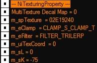
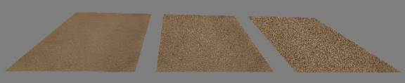
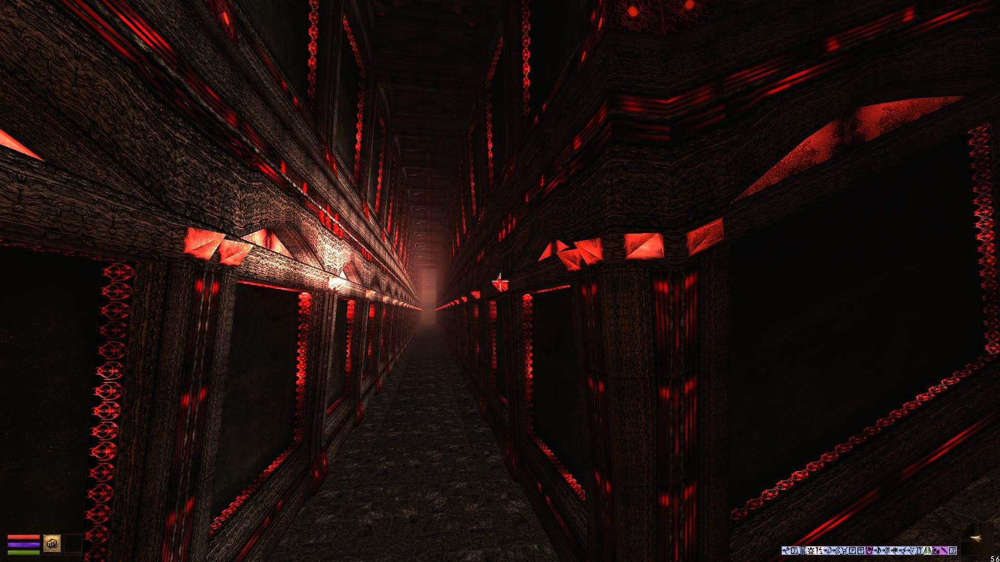
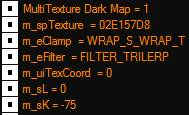
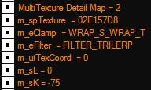
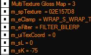
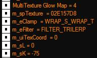
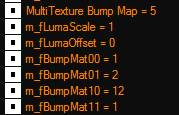
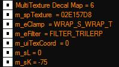

|
|||||||
|
Name
|
можно задать уникально имя.
Актуально только для удобства ориентации в сцене.
По умолчанию, пусто.
| ||||||||||
|
пусто, ничего не назначается.
Но в целях науки можно прописать номер одной из текстур.
Например ее размер.
На игру, такая запись, не влияет, но только на дополнительную информацию, которую можно увидеть.
| |||||||||||
|
Controller
|
Слот для контроллера.
Т.е. при экспорте модели из МАХа.
| ||||||||||
|
Flags
|
по видимости - не важно, т.к. не играет явно заметной роли.
Возможно является неким внутренним идентификатором объекта, т.е. сообщает движку, что это за свойства такие.
По умолчанию, флаг = 0.
SSG (F10) ничего не показывает при изменении флага.
| ||||||||||
|
Стиль наложения текстур.
Базовое значение - APPLY_MODULATE
Кроме отдельных случаев менять нет резона.
Аглицкая справка тута.
| |||||||||||
|
Texture Count
|
кол-во слотов под текстуры. По умолчанию 7 максимум 10.
Но для активации всех слотов, следует указать 10-13!
Т.е. модель может использовать максимум 8-10 текстур одновременно!
Base, Detail, Dark, Gloss, Glow, Bump + 4 Decal.
Примечание.
Если модель использует по умолчанию, только Базовую текстуру, то можно включить использование сразу 7-ми декалей!
Т.е. значение texture count должно быть установлено, как 13.
Для этого потребуется отредактировать nif.xml, см. внизу этой страницы.
Т.е. по умолчанию доступно добавление не более 2х decal текстур.
Впрочем, использование 7-8 декалей сразу, выглядит довольно специфичным случаем...
Примечание.
Можно совмещать использование 7 декалей с любой другой текстурой.
Т.е. glow, dark и пр. не обязательно использовать именно base слот.
Но, для максимально стабильной работы модели, рекомендуется использовать, не более 10 текстур на поверхность!
И значений Texture Count не более 13.
Т.е. если есть текстуры на всех слотах, включая gloss, то ограничиться использованием 4х карт на слоте decal.
Добавление 5ой декали, приведет к вылету редактора при попытке сдвинуть камеру.
Примечание.
Включение 8-ой декали в основном не стабильно.
Однако, при отключении всех прочих слотов, т.е. они оставлены без текстур, можно включить 14 слот и загрузить туда карту декалей.
Т.е. модель будет использовать только 8 декальных карт сразу.
Примечание.
Т.е:
Если установить 8, то возможно использование 2х декалей, вместе со всеми прочими тексурами!
Если установить 10, то можно невозбранно использовать еще две Декальных текстуры, вместе со всеми прочими текстурами!
Итого 6 основных слотов сразу + 4 слота с декалями.
Если установить 13, то возможно использовать 7 декалей + базовую текстуру. Остальные слоты должны быть пустыми!
Если установить 14 и отключить все прочие слоты, то возможно использовать 8 декалей!
При попытке использовать 9ую декаль и значение 15, модель будет приводит к вылету редактора.
При попытке подвинуть камеру, или объект.
Но, при этом в самой игре все работает нормально.
Примечание.
Hrnchamd писал:
There's maximum 8 texture bindings in one draw call
It's from DirectX
Sometimes the texture effects are a second drawing on top
But really, it's max 8 for reliable use
I suppose decals are seperate
not really sure, there's no explanation.
Т.е. оптимально использовать не более 8ми текстур и, вероятно декали могут работать "дополнительным" потоком.
Отчего их может быть более 2х.
Данные обновлены по состоянию на 2022 год! Т.е. ранее считалось, что есть либо баг нифскопа, либо одно из двух.
Теперь получены правильные данные, позволяющие стабильно использовать все доступные слоты текстур.
Впрочем нельзя (все-еще) исключать наличие некоего бага в движке, или в настройках нифскопа... ^-^
Собственно дополнительные 3 слота относятся к текстурам Декалей, однако в редакторе материалов 3д МАХа есть только 1 доступный слот.
НифтулзШейдер позволяет добавить 1-2 декали.
Третий слот декалей, не срабатывает!
| ||||||||||
|
|
| ||||||||||
|
Has Base Texture
|
включает использование слота для этой, основной, текстуры.
Т.е. в 99% этот слот, в моделях, всегда будет использован.
 Что интересно, по факту, базовая текстура = нулевая текстура декалей.
Если YES активно ниже следующее. Если NO слот не активен.
| ||||||||||
|
Настройки для текстуры в слоте.
| |||||||||||
|
Ссылка на текстуру.
Т.е. Здесь указывает имя текстуры. В данном случае, базовой, это текстура есть всегда.
*В ванильных мешах игры, есть только эта текстура.
| |||||||||||
|
Режим наложения.
Либо с повторами (тайлинг) либо без повторов.
Если текстура используется для заливки большой поверхности, где повторяется множество раз, то тайлинг необходим.
Если же, текстура закрывает небольшой участок и не повторяется, можно обойтись без тайлинга.
Т.е. в этом случае, как правило, текстура жестко привязана к контуру объекта через свою развертку.
И что она имеет тайлинг, не определяемо.
0=clamp S clamp T, 1=clamp S wrap T, 2=wrap S clamp T, 3=wrap S wrap T
Аглицкая справка тута.
what do i need to set to disable that texture is repeating?
NiTextureProperty->Base Texture-> Set Clamp Mode to CLAMP_S_CLAMP_T
| |||||||||||
|
режим фильтрации.
Наиболее качественный и правильный это FILTER_TRILERP!
 TRILERP ->BILERP->NEAREST
Но нифскоп, при добавлении текстуры, выставляет режим FILTER_NEAREST_MIPNEAREST.
Что негативно сказывается на пикселизации текстуры! Хотя в теории должно быть как-то иначе.
Следует это исправлять, кроме случаев, когда подобная пикселизация требуется по художественным соображениям, см. далее.
0=nearest, 1=bilinear, 2=trilinear, 3=..., 4=..., 5=...
FILTER_NEAREST">Simply uses the nearest pixel. Very grainy
FILTER_BILERP">Uses bilinear filtering
FILTER_TRILERP">Uses trilinear filtering
FILTER_NEAREST_MIPNEAREST">Uses the nearest pixel from the mipmap that is closest to the display size
Звучит красиво, на деле увы все не так хорошо получается.
FILTER_NEAREST_MIPLERP">Blends the two mipmaps closest to the display size linearly, and then uses the nearest pixel from the result
FILTER_BILERP_MIPNEAREST">Uses the closest mipmap to the display size and then uses bilinear filtering on the pixels
Аглицкая справка тута.
Примечание!
Также, следует учитывать влияние анизотропной фильтрации в настройках драйвера видео карты.
При 16-32х текстуры будут выглядеть более ровное, против 2-8х режима фильтрации!
Примечание.
Изменение режима фильтрации оказывает критически важный эффект на работу Мип-уровней текстур!
Позволяя добиваться более интересных результатов. Включая, нечто похожее на "спекулярный блик" в удалении, или воздействие текстурного эффекта в режиме "блеска".
Т.е. одной сменой режима фильтрации можно получить нечто "новое".
*для слота Глоу это особенно заметно. См. плагин And Nerevar is his Glory (или как-то так) где использована такая техника в статиках 6-го дома.
 Узоры линий причудливо переливающиеся на древних эбонитовых колоннах...
| |||||||||||
|
UV Set
|
Будет удобнее использовать встроенный редактор текстур.
Где и создавать новые набору разверток.
Актуально, если модель имеет несколько UV.
В т.ч. и номер uV set.
The texture coordinate set in NiGeometryData that this texture slot will use.
| ||||||||||
|
PS2 L
|
Справка указывает, что эти значения относятся только для "пс с пополам" приставки.
Т.е. да, для ПлейСтайшен2.
По SSG эти значения можно видеть и редакторе, но каких либо изменений от смены оных в моделях, не наблюдается.
- L & K Value
L and K values are used for MIP Mapping on the PS2.
If L and K are both uninitialized (0 and 0) then default values will be used based on the maximum dimension of the texture.
PS2 only; from the Freedom Force docs,
"L values can range from 0 to 3 and are used to specify how fast a texture gets blurry".
| ||||||||||
|
PS2 K
|
Только для пс пополам приставки.
PS2 only; from the Freedom Force docs,
"The K value is used as an offset into the mipmap levels and can range from -2047 to 2047. Positive values push the mipmap towards being blurry and negative values make the mipmap sharper." -75 for most v4.0.0.2 meshes.
-75 делает текстуру более четкой.
| ||||||||||
|
Unknown1
N\A
|
Обычно = 0.
Какого-то хоть сколько-то заметного эффекта от изменения значения, не наблюдается.
SSG (F10) не показывает никакого параметра, который можно привязать к этому значению.
Т.е. пусто, нет строки, которую можно отождествить с этим значением в ниф файле.
Т.е. здесь есть некое 16-битное (ushort) значение.
Но к чему это относится - не известно.
Однако, встречается в значениях отличных от нуля в некоторых моделях МВ:
'b\\b_n_high elf_m_hair_02.nif - здесь параметр = 279
'd\\door_redoran_tower_01.nif
'f\\furn_coalpile00.nif
'f\\furn_sconce_01.nif
'i\\in_c_djamb_plain_arched.nif
'i\\in_c_plain_r_cwin_rec_03.nif
'i\\in_mudcave2_09.nif
'i\\in_r_s_int_ledge_03.nif
'i\\in_r_s_int_lentrance_04.nif
'm\\text_quarto_03.nif
'x\\ex_hlaalu_wall_up_01.nif
'x\\ex_imp_plaza_stairs.nif
Можно полагать, что устанавливается в 3д МАХ.
Но, где и как - нет данных.
В некоторых файлах, полученных из МАХа, этот параметр мог быть не равен нулю!
Но попытки отследить с чем связано, не дали результата.
В игре не было заметно каких-либо отличий между моделями с разным значением этого параметра.
Отчего особого внимания этому не уделялось.
Либо это вовсе какой-то косяк нифскопа и где-то, что-то, неправильно декодированно.
Примечание (верно для всех слотов).
И точно, что это не связано с m_spTexture который видно по SSG.
Собственно m_spTexture это некий идентификатор текстуры связанный с ее Айди, или другими данными.
Т.е. если использование текстуры включено, но сама текстура не прописано, его значение будет = 00000.
А если одинаковая текстура прописана в разных слотах текстур, то ее m_spTexture будет равен везде.
m_spTexture is the internal texture pointer (m = member, sp = smart pointer) when the texture is loaded.
| ||||||||||
|
Has Dark Texture
|
Все настройки аналогичны выше писанному.
dark map is a simple multiply with base
color = base.rgb * dark.rgb
Этот слот, имеет проблемы при работе PPL режима в МГЕ (ХЕ), что создает ряд неприятных проблем при создании некоторых эффектов. Но, как пишет Таймс(С) в МГЕ от 05 2021 это поправили!
Баг остался для старых версий МГЕ... которые могут работать под ХР.
МГЕ от мая 2021го уже не будет работать под ХРями(С)
Однако более свежие версии, снова могут работать под ХР! 17-18ая версия точно.
Если использована в частицах позволяет создавать эффект трассировки луча.
 + может управлять общей прозрачностью объекта используя альфа канал в текстуре в т.ч.
+ крайне полезна для наложения всякого рода масок, по которым будут работать другие текстуры.
+ в некоторых специфических случаях, можно обойтись только этой текстурой. | ||||||||||
|
Has Detail Texture
|
Настройки для текстуры детализации.
Очень полезный слот существенно повышающий выразительность модели.
А равно позволяющий избавляться от размытия пикселей, если камера уперлась в объект вплотную.
Особенно полезно для больших поверхностей!
Также позволяет повысить яркость объекта при освещении.
 | ||||||||||
|
Has Gloss Texture
|
Сама по себе, в игре, никак не отображается.
Работает только в связке с Bump картой.
Отвечает за активацию эффекта блеска на полностью прозрачных поверхностях.
Т.е. в сочетании с бампом.
Адекватно работает только в МСП версий 2.Х в оригинальном движке сломана.
 - принимает ЮВ и Флипп контроллеры.
Только ВМЕСТЕ со слотом Бампа!
Обратное тоже верно, бамп будет работать с этими контроллерами, только, если они есть на слоте Gloss.
| ||||||||||
|
Has Glow Texture
|
Текстура подсветки объекта.
Позволяет светиться выбранным участкам оного.
Не рекомендуется для использования в частицах!
Т.е. существенно огрубляет контур текстуры.
 | ||||||||||
|
Has Bump Map
|
Включает использование текстуры неровностей.
Используется только для получения специфических эффектов.
Это не баг Морровинда, это особенность движка. См. раздел об этой карте подробно.
Зеленый и Красный, каналы в файле текстуры, отвечают за смещения пикселей по осям XY, синий отвечает за яркость светимости.
Также, воспринимается, как смещение пикселя по оси Z.
Черный - полностью гасит текстурный эффект.
Этот слот, работает в сочетании со слотом GlossMap.
Т.е. Gloss карта будет дополнительно влиять на поведение текстурного эффекта.
The Bump Map is a special format map that represents bumpiness and glossiness of the surface being textured. Like a Gloss Map, the Bump map is invisible unless an environment map is also supplied. There are two basic forms of Bump Maps: with and without Luminance (or Luma) channels. If present, the Luma channel represents the monochromatic glossiness of the surface. It is exactly equivalent to the Gloss Map above, but only allows attenuation of the environment map, not tinting.
 | ||||||||||
|
Bump Map Luma Scale
|
Сила "яркости" бампа.
Ака, "высота" бампа. Чем больше значение, тем грубее будет выглядеть эффект.
Т.е. больше артефактов вылезает.
Можно ставить отрицательные значения -Х.
Значения определяются целями и вкусами 3д Художника.
Т.е. можно использовать любые "понравившиеся" значения.
От 0.0001 до 100.0000
1.000 по умолчанию.
Luma Scale is a scale factor applied to the Luma channel. This value can be between 0.0 and 1.0. The effect can be seen below. The left image has a Luma Scale of 0.0, essentially canceling out the bump map. The right image has a Luma Scale of 1.0.
| ||||||||||
|
Bump Map Luma Offset
|
Смещение эффекта от карты бампа.
Также влияет на яркость (заметность) эффекта.
Большие значения, повышают «замусоренность».
Не рекомендуется ставить что-то сильно значительное.
0.000 по умолчанию.
Because Bump-mapping cannot be used with a gloss map, most bump-mapping hardware supports adjusting the luminance of the environment map (also known as the glossiness). This setting is normally stored in the luminance channel of the bump map. The luminance scale and offset may be used to modify these values on the fly. Lumina Scale defaults to 1.0.
The effect of the Luma Offset parameter can be seen below. The left image has a Luma Offset of 0.0. The right image has a Luma Offset of 1.0. These values represent the extreme ends of the spectrum for this parameter.
| ||||||||||
|
Bump Map Matrix
|
Управляет «объемом» бампа.
Т.е. с какой стороны эффект освещения будет воздействовать на бамп для имитации рельефа.
1, 0, 0, 1 по умолчанию.
Верх, низ, право, лево
Matrix 00 – 11
The 2x2 matrix that is defined by the four bump map matrix entries defines the rotation and scale of the bump map's dU and dV channels with respect to the environment map coordinates. The incoming bump map dU and dV, as sampled from the bump, are multiplied as a vector times the 2x2 matrix, and then applied to the U and V values computed for the environment map. Most frequently, the 00 and 11 matrices are set to the same positive value between 0 and 1, depending on the roughness of the surface. The 01 and 10 elements are left at 0.0 in these cases. Other values may be used to rotate the basis of the bump mapping.
| ||||||||||
|
|
Направление воздействия:
| ||||||||||
|
m11
|
1,1 (top left)
| ||||||||||
|
m21
|
2,1 (bottom left)
| ||||||||||
|
m12
|
1,2 (top right)
| ||||||||||
|
m22
|
2,2 (bottom right)
| ||||||||||
|
Has Decal 0
|
Включает использование первой текстуры декалей.
Эффективно создает «грязные» заляпанные поверхности, а также позволяет прятать разного рода ошибки текстуринга, или создавать дополнительную детализацию на объекте.
Эта текстура накладывается поверх прочих текстур.
Т.е. перекрывает Базовую текстуру.
Для правильной работы обязательно наличие Альфа канала в текстуре!
Иначе все прочие текстуры будут полностью перекрыты этой текстурой!
Ценное явление!
Что открывает целый пласт новых возможностей по анимации текстур.
Также, карта декалей позволяет управлять текстурными эффектами.
 Обратите внимание, по факту не нулевой!
Т.е. движок воспринимает базовую текстуру как нулевой декайл мап, а все остальные декали получают номера от 1 и далее.
В нифскопе же, первая текстура декалей = нулевая.
| ||||||||||
|
Has Decal 1
Decal 1 Texture
|
Аналогично первой (здесь в нифскопе) нулевой декали.
Для активации этого слота нужно указать Texture Count 8.
| ||||||||||
|
Has Decal 2
Decal 2 Texture
|
Аналогично нулевой декали.
Для активации этого слота нужно указать Texture Count 9.
| ||||||||||
|
Has Decal 3
Decal 3 Texture
|
Аналогично нулевой декали.
Для активации этого слота нужно указать Texture Count 10.
*ранее отмечались проблемы при активации этого слота.
Редактор не хотел работать с такой моделью.
Однако, изыскания уже от 2022го года (да не очень торопились ^-^) показали таки возможность добавления большего кол-ва слотов!
И использование сразу 4х или 7ми текстур декалей.
| ||||||||||
|
Has Decal 4
Decal 4 Texture
|
Аналогично нулевой декали.
Для активации, в ниф файле, после правки Ниф.хмл (см. ниже) указать Texture Count 11.
Но небольшой твикинг, позволит существенно расширить их кол-во!
И как следствие, см. выше скриншот ССГ. 6 карт декелей легло на одну поверхность.
Another decal texture. Who knows the limit?
Редактор осилил (таки) больше 3х!
А затем и все 7 декалей сразу...
| ||||||||||
|
|
Настройка для Ниф.хмл (1.1.3) файла.
<add name="Has Decal 0 Texture" type="bool">Do we have a decal 0 texture?</add>
<add name="Decal 0 Texture" type="TexDesc" cond="Has Decal 0 Texture">The decal texture.</add>
<add name="Has Decal 1 Texture" type="bool" cond="Texture Count >= 8">Do we have a decal 1 texture?</add>
<add name="Decal 1 Texture" type="TexDesc" cond="Has Decal 1 Texture">Another decal texture.</add>
<add name="Has Decal 2 Texture" type="bool" cond="Texture Count >= 9" >Do we have a decal 2 texture?</add>
<add name="Decal 2 Texture" type="TexDesc" cond="Has Decal 2 Texture">Another decal texture.</add>
<add name="Has Decal 3 Texture" type="bool" cond="Texture Count >= 10" >Do we have a decal 3 texture?</add>
<add name="Decal 3 Texture" type="TexDesc" cond="Has Decal 3 Texture">Another decal texture.</add>
<add name="Has Decal 4 Texture" type="bool" cond="Texture Count >= 11" >Do we have a decal 4 texture?</add>
<add name="Decal 4 Texture" type="TexDesc" cond="Has Decal 4 Texture">Another decal texture.</add>
<add name="Has Decal 5 Texture" type="bool" cond="Texture Count >= 12" >Do we have a decal 5 texture?</add>
<add name="Decal 5 Texture" type="TexDesc" cond="Has Decal 5 Texture">Another decal texture.</add>
<add name="Has Decal 7 Texture" type="bool" cond="Texture Count >= 13" >Do we have a decal 7 texture?</add>
<add name="Decal 7 Texture" type="TexDesc" cond="Has Decal 7 Texture">Another decal texture.</add>
<add name="Has Decal 8 Texture" type="bool" cond="Texture Count >= 14" >Do we have a decal 8 texture?</add>
<add name="Decal 8 Texture" type="TexDesc" cond="Has Decal 8 Texture">Another decal texture.</add>
<add name="Has Decal 9 Texture" type="bool" cond="Texture Count >= 15" >Do we have a decal 9 texture?</add>
<add name="Decal 9 Texture" type="TexDesc" cond="Has Decal 9 Texture">Another decal texture.</add>
<add name="Has Decal 10 Texture" type="bool" cond="Texture Count >= 16" >Do we have a decal 10 texture?</add>
<add name="Decal 10 Texture" type="TexDesc" cond="Has Decal 10 Texture">Another decal texture.</add>
|